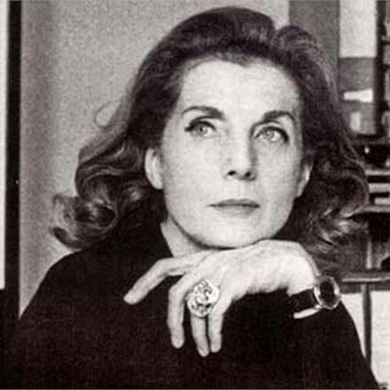
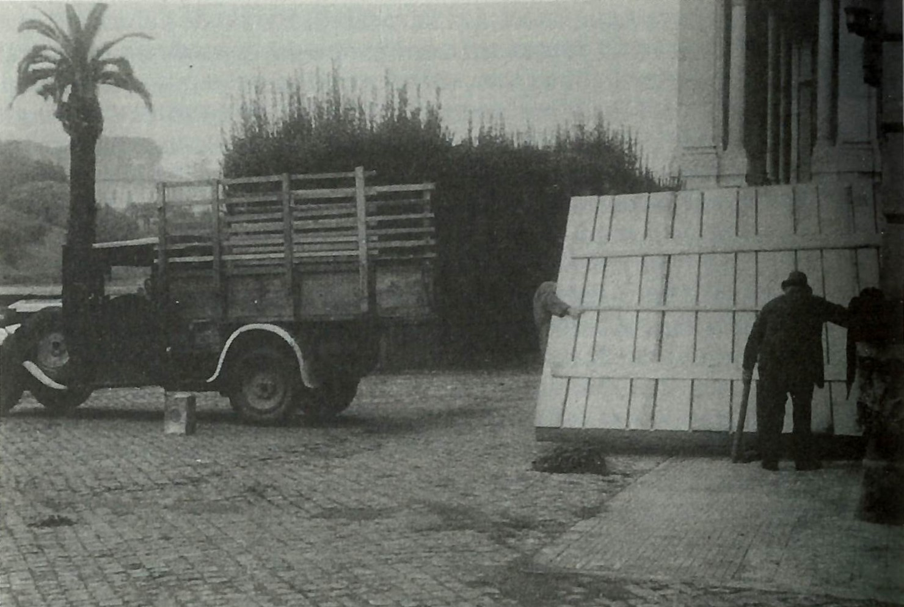
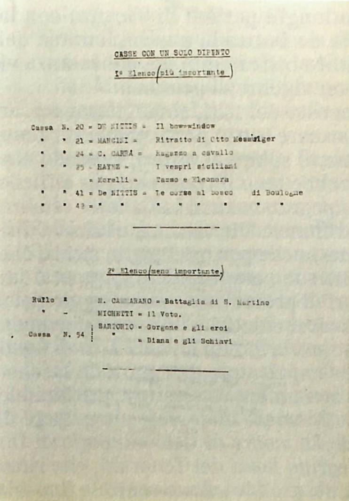
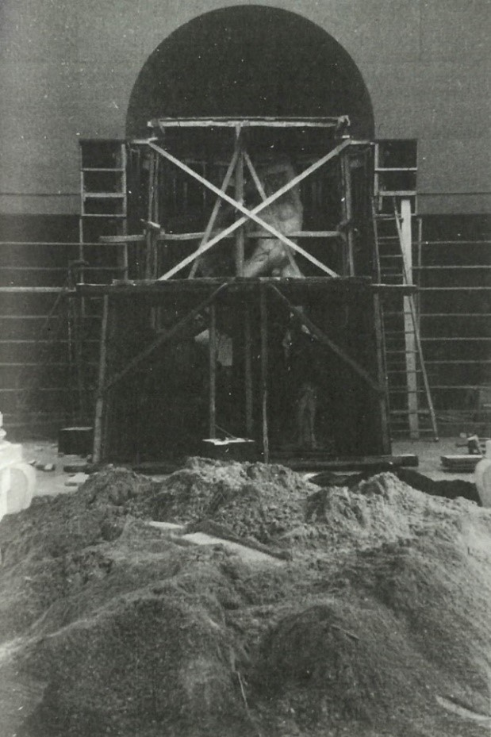

Palma Bucarelli (Roma, 1910 - 1998)
LA GALLERIA SONO IO
Palma BucarelliVIAF fu prima ispettrice e poi direttrice della Galleria Nazionale di Arte Moderna di Roma. Il suo operato è conservato presso l’Archivio bioiconografico della GNAM, dove possiamo trovare documentazione riguardante donazioni o acquisti di opere, dossier sulle mostre e ritagli di giornale con le polemiche che suscitavano le sue scelte, ma soprattutto l’elenco delle opere che trasferì a Caprarola, i resoconti sugli spostamenti e le disposizioni per la protezione antiaerea1. Donò invece all’Archivio Centrale dello Stato documentazione personale, tra cui fotografie di famiglia, pagelle e appunti di scuola, biglietti di ammiratori, lettere del marito Paolo Monelli e di Carlo Argan2.
Nell’estate del 1941, quando il direttore Roberto Papini si trasferì a Firenze per insegnare, Bucarelli divenne reggente della Galleria. A causa dell’assenza del direttore e dell’inadeguatezza delle misure che aveva proposto al Ministero, Bucarelli decise di percorrere delle soluzioni alternative, proponendo come rifugio per le opere della Galleria il Palazzo Farnese di Caprarola. Il rifugio, a lei familiare perché meta delle vacanze estive in adolescenza, era abbastanza lontano da obiettivi militari ma allo stesso tempo abbastanza vicino a Roma perché lei potesse effettuare sopralluoghi personalmente e di requente. Il 19 agosto 1941 arrivò l’autorizzazione dal Ministero ed ebbe inizio l’operazione di imballaggio e trasferimento, accompagnata da meticolosi elenchi e documentazione fotografica. Una cartellina conservata nell’Archivio Centrale dello Stato raccoglie l’elenco dei 22 viaggi che dal 13 settembre 1941 al 6 febbraio 1942 portarono 832 opere da Roma a Caprarola, con l’indicazione del numero delle casse trasportate e dei dipinti in esse contenuti. Bucarelli scortava le opere direttamente sui camion o seguendoli con la sua auto personale3. L’importanza che la direttrice attribuiva al patrimonio artistico si rivelò anche nella decisione di riaprire la Galleria nell’aprile del 1942, mossa dalla necessità di offrire alla popolazione sconvolta dalla guerra qualcosa in cui sperare4.
Dopo l’armistizio il rifugio non era più sicuro: Bucarelli infatti venne informata dal custode del Palazzo che i tedeschi si erano accampati nelle vicinanze e volevano occupare il borgo. Dopo diverse sollecitazioni, nel novembre del 1943 arrivò l’autorizzazione del Ministero a trasferire le opere a Castel Sant’Angelo e tra il 6 febbraio e il 6 marzo 1944, viaggiando prevalentemente di notte, i beni vennero spostati5.
Nel giugno del 1944 Roma era finalmente liberata e Bucarelli non perdette tempo: riaprì la Galleria, allestendo nelle poche sale rimaste integre una mostra di artisti contemporanei e procedette al tempestivo rientro delle opere da Castel Sant’Angelo6.
1. Ferrario 2010, p. 6.
2. Ivi, p. XI.
3. Biondi 2023, pp. 267 - 269.
4. Ivi, pp. 273 - 274.
5. Ivi, pp. 275 - 278.
6. Ibid.




Scheda prosopografica
Frequentò il liceo classico e successivamente si laureò in Lettere presso l’Università di Roma nel 1931. Approfondì gli studi con un Corso di perfezionamento.
Nel 1931 fu designata ispettrice presso la Galleria Borghese, nel 1936 presso la Soprintendenza alle Gallerie di Napoli e nel 1939 presso la Galleria Nazionale di Arte Moderna di Roma. Nel 1942 divenne direttrice della GNAM.
Durante la guerra, si occupò di tutelare il patrimonio artistico di sua competenza. Individuò nel Palazzo Farnese di Caprarola un rifugio sicuro e si occupò del trasferimento di 832 opere dal 13 settembre 1941 al 6 febbraio 1942. Dopo l’8 settembre 1943, con l’aggravarsi della situazione, organizzò il trasferimento delle opere a Castel Sant’Angelo.
La Galleria riaprì al pubblico nel dicembre del 1944 con una mostra dedicata all’arte contemporanea e alla conclusione del conflitto ottenne lo statuto di Soprintendenza Speciale all’Arte Contemporanea. Grazie al lavoro di B., tra il 1945 e il 1960 la GNAM si affermò come nucleo di elaborazione culturale, riflessione critica e produzione artistica. Tra gli anni ’50 e ‘60 B. portò a Roma l’astrattismo, l’informale e le più importanti correnti internazionali. Organizzò mostre e procurò alla Galleria opere di artisti come Pollock, Picasso, Kandinskij, Mondrian, Foutrier, Modigliani, Rothko. In Italia sostenne gli artisti delle avanguardie che operavano in quel periodo, tra i quali Manzoni e Burri: proprio a causa della scelta di esporre opere di questi artisti dovette affrontare due interrogazioni parlamentari.
Accademico Cultore di San Luca; Legione d’Onore; Grand’Ufficiale dell’Ordine al Merito della Repubblica.
Palma Bucarelli ad vocem in DBSSA 2007 pp. 128 – 130.
2010, Palma Bucarelli, Cronache indipendenti: arte a Roma fra 1945 e 1946, a cura di Lorenzo Cantatore, De Luca Editori d’Arte, Roma.
Roma, Archivio Centrale dello Stato. Roma, Soprintendenza alla Galleria Nazionale d’Arte Moderna, Archivio bioiconografico.
2007, Maura Picciau, Palma Bucarelli, in Dizionario biografico dei Soprintendenti Storici dell’Arte (1904-1974), Bononia University Press, Bologna, pp. 124 – 130; 2009, Mariastella Margozzi, «Una traccia indelebile: il contemporaneo di Palma Bucarelli», Art e dossier, vol. 24, n. 258, pp. 30 – 35; 2009, Mariastella Margozzi (a cura di), Palma Bucarelli. Il museo come avanguardia, catalogo della mostra (Roma, Galleria Nazionale d’Arte Moderna, 26 giugno – 1 novembre 2009), Electa, Milano; 2011, Lorenzo Cantatore, Palma Bucarelli: Immagini di una vita, Palombi, Roma; 2010, Rachele Ferrario, Regina di quadri. Vita e passioni di Palma Bucarelli, Mondadori, Milano; 2011, Lorenzo Cantatore, Giuliana Zagra (a cura di), Palma Bucarelli a cento anni dalla nascita (atti della giornata di studi, Roma, Biblioteca Nazionale Centrale, 25 novembre 2010), BNCR, Roma; 2011, Lorenzo Cantatore, Galmoderna, Belle Arti 139. La casa di Palma Bucarelli nella Galleria Nazionale d'Arte Moderna, in Stefania Frezzotti, Patrizia Rosazza Ferraris (a cura di), La Galleria Nazionale d'Arte Moderna. Cronache e storia 1911-2011, Palombi Editori, Roma, pp. 182 – 197; 2011, Emanuela Colantonio, Il primo riordinamento delle collezioni Ottocento nel 1948: polemiche e punti di vista, in Stefania Frezzotti, Patrizia Rosazza-Ferraris (a cura di) La Galleria Nazionale d'Arte Moderna. Cronache e storia 1911-2011, Palombi Editori, Roma, pp. 153 – 167; 2011, Mariastella Margozzi, Tra poetiche figurative e ricerche astratto-informali: la scelta di Palma Bucarelli per la Galleria nazionale d’arte moderna, in Stefania Frezzotti, Patrizia Rosazza-Ferraris (a cura di) La Galleria Nazionale d'Arte Moderna. Cronache e storia 1911-2011, Palombi Editori, Roma, pp. 169 – 181; 2012, Arianna Marullo, «The most beautiful museum director in the world: appunti per una biografia di Palma Bucarelli», I beni culturali, vol. 20, n. 3, pp. 28 – 32; 2014, Mariastella Margozzi, Alberto Giacometti e Palma Bucarelli: figure in solitudine che giocano alla palla, in Anna Coliva e Christian Klemm (a cura di), Giacometti: la scultura, catalogo della mostra (Roma, Galleria Borghese, 5 febbraio – 25 maggio 2014), Skira, Milano, pp. 49 – 61; 2018, Moira Chiavarini, Angela Madesani, «La grammatica della pittura: tra esposizioni e ricostruzioni», Arte e critica, a. 25, n. 90, pp. 90 – 93; 2018, Claudia Palma, Gli archivi della Galleria Nazionale d’Arte Moderna: una storia che continua, in Alessandra Donati, Rachele Ferrario, Silvia Simoncelli (a cura di), Artists’ archives and estates: cultural memory between law and market, Edizioni scientifiche italiane, Napoli, pp. 83 – 87; 2018, Simone Zacchini, «"Le courage des Positions Extrêmes": Palma Bucarelli e l’avanguardia romana alla Biennale di Parigi del 1969», Rivista di psicologia dell’arte, Nuova Serie, a. 39, n. 29, pp. 5 – 16; 2019, Laura Leuzzi, «Edimburgo - Roma 1967, connessioni italo-scozzesi sulle tracce della mostra "Contemporary Italian Art" alla Richmond Demarco Gallery», Storia dell’arte, Nuova serie 1/2, n. 151 – 152, pp. 204 – 215; 2021, Flavia Frigeri, All that Jazz: Rome’s Galleria Nazionale d’Arte Moderna and the rise of abstraction in postwar Italy, in Flavia Frigeri, Kristian Handberg (eds.), New histories of art in the global postwar era, Routledge, Londra, pp. 232 – 243; 2021, Irene Quarantini, Ernesto Damiani, «Arte Italiana Contemporanea 1955. Filologia di una mostra itinerante», Saggi e memorie di storia dell'arte, Istituto di Storia dell'Arte, Firenze, vol. 45, pp. 166 – 201; 2022, Mariastella Margozzi, Palma Bucarelli: 1961, viaggio in America, De Luca Editori d’Arte, Roma; 2023, Antonietta Biondi, Palma Bucarelli: una partigiana dell’arte, in Luigi Gallo, Raffaella Morselli (a cura di), Arte liberata. Capolavori salvati dalla guerra 1937-1947, catalogo della mostra (Roma, Scuderie del Quirinale, 16 dicembre 2022 – 10 aprile 2023), Electa, Milano, pp. 266 – 279.
Chora Media, Paladine. Puntata 4: Palma Bucarelli
RaiPlay, Illuminate. Protagoniste del nostro tempo. Episodio 4: Palma Bucarelli
RaiPlaySound, Italiane. Episodio 93: Palma Bucarelli